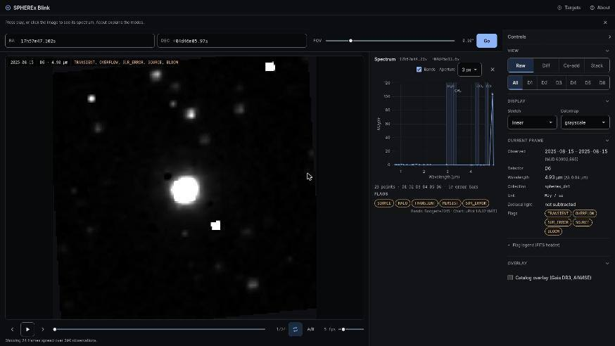
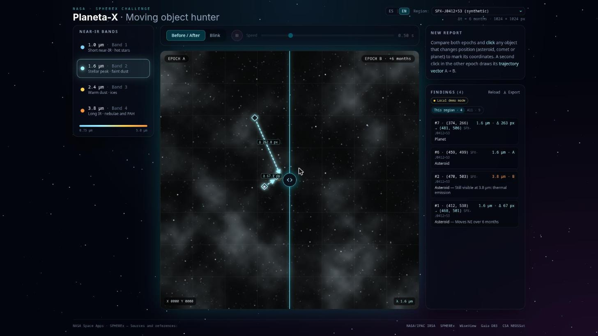
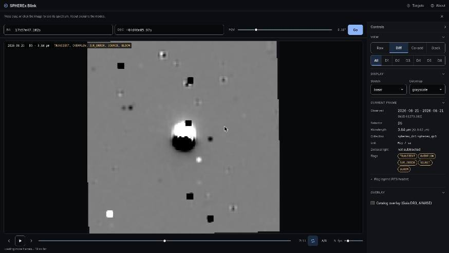
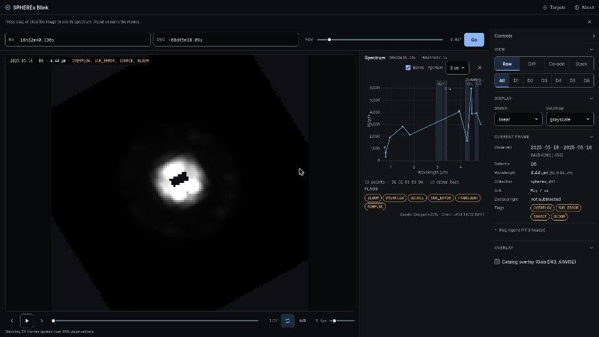

NASA Space Apps Challenge 2026 · Planet X and SPHEREx
Two tools, one sky
SPHEREx Blink and Planeta-X: two ways to spot moving objects in SPHEREx-era infrared images.
Team AirmanPrep · AirmanPrep.com
Luis000923 · charlie-002-XD · cruncron-png
The problem
The sky is public. The tools aren't.
SPHEREx maps the entire sky in 102 infrared colours, but every image sits in a multi-extension FITS file behind an archive interface.
Checking whether something moved means comparing dates by hand. That is how Pluto was found, and it is still a job for experts.
102
infrared bands per image, six detector arrays, two full-sky passes a year.
The challenge: a public web tool that shows a patch of sky as a short film, so anyone can spot what moves.
One problem, two angles
Why two projects for one problem?
One starts from the data, the other from the person using it. We built both and kept them side by side so you can compare them.

SPHEREx Blink
Real data, real motion.
Enter RA/Dec and every SPHEREx exposure of that patch plays as a time-lapse. In difference mode Barnard's Star leaves a bright and a dark half.
We measured about 9 arcsec per year north; the catalogue says 10.4, our uncertainty is about 2.
WISE 0855 is too faint for single frames and Epsilon Indi B is an unresolved binary, so the app claims no detection for either.

SPHEREx Blink · the data
Spectra, flags and live NASA data.
Click a pixel for its spectrum. Flags come from the FITS headers. Epochs come from IRSA, cutouts from the open SPHEREx copy on AWS.
- 280–565
- observations per target
- 24
- frames across detectors D1–D6
- 0.3–0.7 s
- to first frame, shipped cache
Planeta-X
Compare epochs, mark what moved.
Slide or blink between Epoch A and Epoch B across four near-infrared bands. Click an object that shifted and the app draws its A to B vector.
- Findings list with export to CSV or JSON.
- Interface in Spanish and English; PHP backend.
Its images are WISE cutouts from IRSA and simulated SPHEREx-style regions, not live SPHEREx exposures.
Use them
Open both and compare.
Same challenge, two answers. One reads the real archive, the other teaches and records the hunt.
SPHEREx Blink is open source under Apache-2.0; every view is a link you can share or embed.